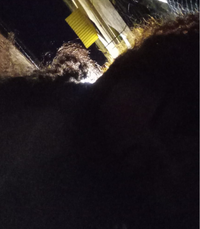

Você foi uma das melhores coisas que ja aconteceu na minha vida
obrigado por tudo amor te amo muito💓
Já se passaram 2 meses , e ainda eu sinto muitas coisas
por vc q eu nunca
sentido antes, eu já aceitei que vc é a mulher da
minha vida, e eu vou lutar pra viver junto contigo pra sempre viu desgraça
rapaz q desgraça eu te amo mt vsf
eu te amo
eu sou machista